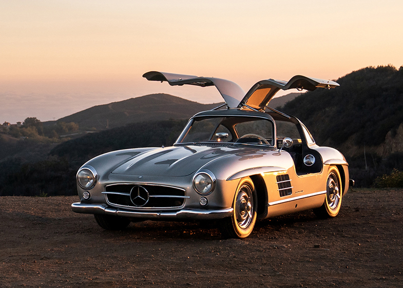

The Aston Martin Vantage is a two-seater sports car built by British manufacturer Aston Martin since 2018. It replaces the previous model which had been in production for 12 years.
Aston Martin Vantage
Classic Cars
Aston Martin Vantage
The Mercedes-Benz 300 SL is a two-seat sports car that was produced by Mercedes-Benz from 1954 to 1957 as a gullwinged coupé and from 1957 to 1963 as a roadster.

Mercedes-Benz 300 SL
Luxury Cars
Maybach 57
Maybach 57 is the famous car that the Romanian millionaire George (Gigi) Becali opened with a crowbar.